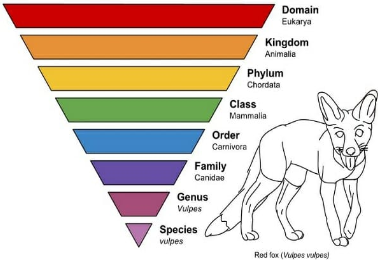

Callout
Taxonomy is the classification, identification, and naming of organisms.
It aims to group organisms according to a set of criteria. One criterion is how closely related they are to each other.

What is Phylogeny?
Phylogeny is the science that deals with evolutionary relationships between and among species—entire populations of individuals. In many ways, these relationships, or kinships, are similar to a large family tree.
In many ways, these relationships, or kinships, are similar to a large family tree. Instead of tracing the relationships between individual family members, phylogeny tracks relationships between entire species.
A family tree shows biological relationships between people, while phylogenetic trees show evolutionary relationships among species.
Callout
What are Clades?
A clade is a taxonomic group that includes a single ancestor species and all its descendants.
Each clade on a phylogenetic tree can be thought of as a branch on the “tree of life.”
Clades can also be large—including all those species that share a more distant common ancestor—such as the order Carnivora of mammals.
Regardless of their size, clades are based on the most fundamental connection between species: their evolutionary relatedness.
Timeline
One of the major strengths and weaknesses of the traditional classification system is that it groups species primarily by observed morphological characteristics. These groups are then arranged into a set number of taxonomic ranks.
Grouping species this way is simple and convenient but may overlook less obvious characteristics that often provide strong evidence about relatedness.
The organisms are grouped into different-sized clades that are not limited to a set number of taxonomic ranks.
In contrast, phylogenetic analysis can uncover the evolutionary relatedness of organisms (see picture).
In the (a) traditional classification system, crocodiles are grouped with turtles, snakes, and lizards because of their shared physical features.
In (b) modern taxonomy, crocodilians are grouped with birds because they share a more recent common ancestor. Both birds and crocodilians are included in the larger reptile clade.
The important role of the International Barcode of Life Project
The International Barcode of Life Project (iBOL) was launched in 2010. It is supported by 25 countries and involves hundreds of leading research scientists.
The project’s hub will be at the Biodiversity Institute of Ontario at the University of Guelph.
Dr. Herbert’s lab has already used DNA barcoding technology to reveal widespread false labeling of fish products sold in Canada and the U.S.